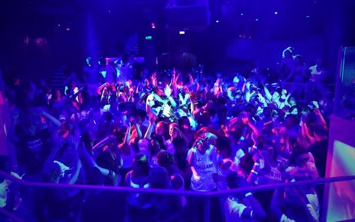
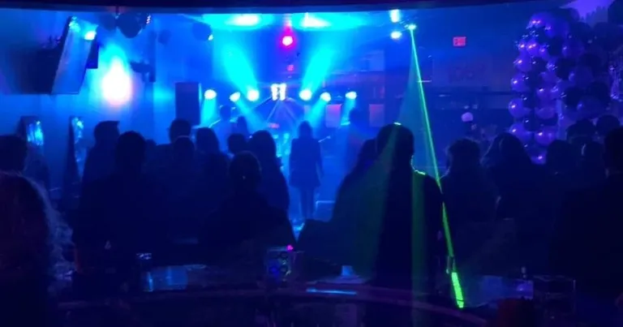
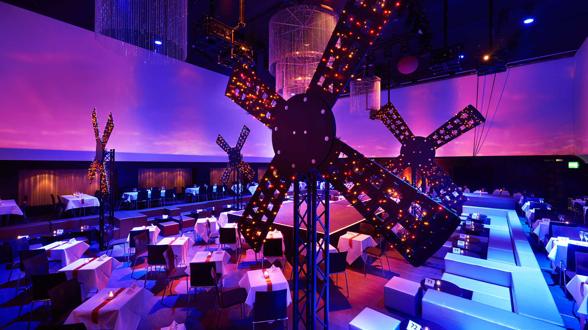

We are made up of young proffessional DJ's. We specialize in all types of music, including as classic rock,reggae, pop or contemporary R&B. We have proffesional and experienced disc jockeys. Our Djs' sometimes get to choose which time slot they want to work, but most of those just starting out in the field have to take night or early morning shifts. We are made of qualified and profession disc jockey use our own equipment to provide entertainment at nightclubs or restaurants. We also supply music and sound system services at special events, such as weddings, Babyshowers, House party, Birthday party and corporate banquets.
About Us
Events
Take a look at some of our previous events and performances here!   